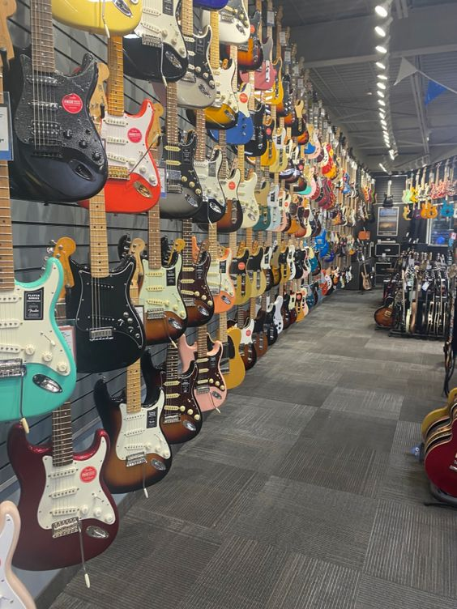

Reza Electric Guitar Store

Selamat datang di Reza Electric Guitar Store, kami adalah destinasi utama bagi para penggemar gitar listrik di seluruh Indonesia. Dengan koleksi gitar yang lengkap dan beragam, toko ini menyediakan berbagai merek terkemuka dan model gitar dari yang klasik hingga yang modern. Karyawan yang berpengetahuan luas di toko ini siap membantu para pelanggan dalam menemukan gitar yang sesuai dengan gaya bermain dan kebutuhan mereka. Selain itu, toko ini juga menawarkan berbagai aksesori dan peralatan musik lainnya, serta layanan perbaikan dan perawatan gitar. Dengan komitmen untuk memberikan pelayanan terbaik kepada pelanggan, Reza Electric Guitar Store menjadi tempat yang dicari oleh para musisi untuk memenuhi kebutuhan gitar listrik mereka.
Kualitas Terjamin Kami hanya menjual Gitar Listrik asli dan berkualitas tinggi, sehingga Anda dapat menikmati suara yang jernih dan otentik setiap kali Anda memetikan senar. Kami sangat memperhatikan keaslian produk-produk kami dan menjamin kepuasan pelanggan dalam hal kualitas.
New Guitar
Yamaha Pacifika PAC112VM
Rp.3.320.000
Gitar listrik Yamaha Pacifica PAC112VM adalah salah satu model gitar dari seri Pacifica yang dikenal dengan kualitas dan kenyamanannya, terutama untuk pemain pemula hingga menengah. Gitar ini menawarkan berbagai fitur yang biasanya ditemukan pada gitar dengan harga lebih tinggi, sehingga menjadi pilihan yang populer di kalangan gitaris.
Yamaha Pacifica PAC112VM adalah gitar listrik dengan desain klasik yang terinspirasi dari model Stratocaster, namun dengan beberapa sentuhan khas Yamaha. Gitar ini menawarkan kualitas konstruksi yang baik, suara yang fleksibel, dan kenyamanan bermain yang luar biasa.
Berikut beberapa detail tambahan tentang Guitar Yamaha Pacifika:
- Gitar listrik Yamaha Pacifica PAC112VM memiliki badan dari kayu alder dengan finishing gloss polyurethane.
- Leher dan fretboard terbuat dari maple, dengan radius 13.75" dan 22 fret.
- Skala panjangnya adalah 25.5".
- Gitar ini dilengkapi bridge vintage-style tremolo, die-cast tuners, dan pickguard 3-ply.
Ibanez GRG170DX-BKN
Rp.3.672.000
Gitar listrik Ibanez GRG170DX-BKN adalah salah satu model dari seri GRG (Gio RG) yang dirancang khusus untuk memberikan pengalaman bermain yang berkualitas tinggi dengan harga yang terjangkau. Model ini sangat populer di kalangan gitaris pemula hingga menengah karena kombinasi fitur yang solid, suara yang kuat, dan desain yang menarik.
Ibanez GRG170DX-BKN memiliki desain yang agresif dan modern, yang terinspirasi dari seri RG yang terkenal. Gitar ini menawarkan performa yang handal dengan kualitas build yang baik, menjadikannya pilihan ideal bagi gitaris yang mencari instrumen serbaguna dan tahan lama.
Berikut beberapa detail tambahan tentang Guitar Yamaha Pacifika:
- Gitar listrik Ibanez GRG170DX-BKN memiliki badan poplar dengan finishing gloss polyurethane.
- leher maple dengan profil GRG, dan fretboard bound purpleheart dengan 24 fret serta inlay sharktooth.
- Skala panjangnya 25.5".
- Pickup konfigurasi HSH (Humbucker-Single-Humbucker) menggunakan Infinity R Humbucker (neck dan bridge) dan Infinity RS Single-coil (tengah), dengan kontrol master volume, master tone, dan 5-way blade switch.
- Dilengkapi bridge T102 Tremolo dan die-cast tuners standar, serta tersedia dalam warna Black Night (BKN).
Guitar Prices
Epiphone Les Paul Classic Worn, Heritage Cherry Sunburst
Rp.8.150.000
"Epiphone Les Paul Classic Worn menampilkan bodi dan leher yang kokoh, serta pickup yang kuat untuk menghasilkan suara yang khas Les Paul. Finishing worn memberikan kesan vintage yang unik dan tampilan yang sudah berumur, seolah-olah gitar ini telah melalui banyak pertunjukan. Gitar ini ideal untuk gitaris yang mencari kualitas suara dan kenyamanan bermain dengan gaya klasik."
Yamaha Revstar RSE20 Electric Guitar
Rp.5.450.000
"Yamaha Revstar RSE20 memiliki fitur dengan lima opsi tampilan yang terinspirasi dari café racer, chambered body, dual Alnico V humbucker, dan Dry Switch high-pass filter push/pull untuk menambah keserbagunaan suara.
Ibanez AF75 BS Gitar Elektrik Hollow Body
Rp.6.900.000
"Ibanez AF75 BS adalah gitar hollow body yang memadukan desain klasik dengan fitur modern, menghasilkan instrumen yang tidak hanya menarik secara visual tetapi juga unggul dalam performa. Dengan kualitas suara yang hangat dan penuh, kenyamanan bermain yang luar biasa, dan tampilan yang elegan, gitar ini adalah pilihan ideal untuk gitaris yang mencari instrumen serbaguna dengan karakteristik suara dan estetika yang klasik."
Ibanez AEG50 IBH Gitar Akustik Elektrik
Rp.4.450.000
"Ibanez AEG50 IBH adalah gitar akustik elektrik serbaguna dengan desain bodi yang tipis dan leher ramping untuk kenyamanan bermain. Dilengkapi dengan pickup elektronik untuk performa live atau rekaman studio. Suara hangat dan jelas, cocok untuk berbagai gaya musik."
Squier Affinity Telecaster Electric Guitar, Maple FB – Butterscotch Blonde
Rp.4.490.000
"Gitar listrik Squier Affinity Telecaster dengan fretboard maple dan warna Butterscotch Blonde adalah instrumen yang sangat diakui dalam dunia musik. Dengan desain yang klasik dan suara yang jelas, gitar ini cocok untuk berbagai gaya musik, dari blues hingga rock."
Ibanez Artcore AS53 TF Gitar Elektrik Hollow Body
Rp.4.750.000
"Gitar elektrik hollow body Ibanez Artcore AS53 TF adalah instrumen yang menarik dengan desain yang elegan dan suara yang kaya. Dengan bodi yang hollow dan konstruksi yang solid, gitar ini cocok untuk berbagai gaya musik, terutama jazz, blues, dan rockabilly."